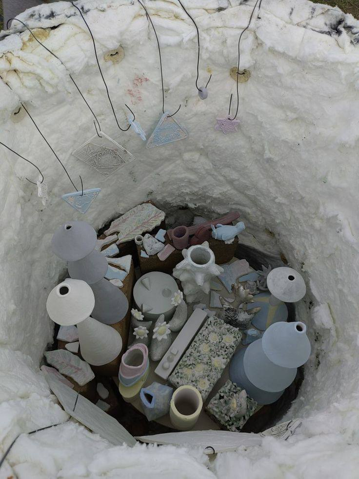
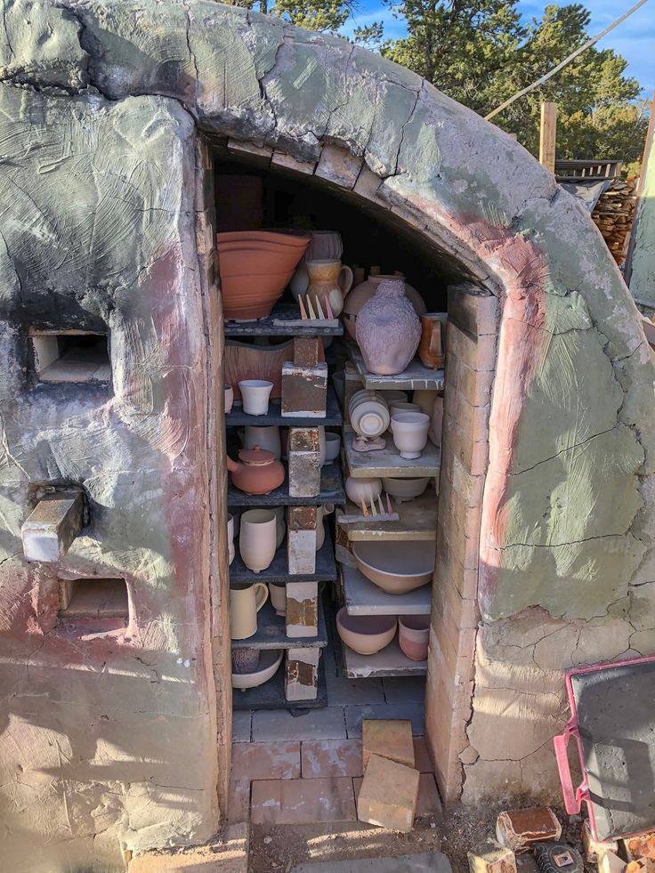

Тайны обжига: как температура меняет керамику
Процесс обжига — это магия превращения мягкой глины в прочное керамическое изделие. Температурные режимы кардинально влияют на свойства материала, определяя его прочность, пористость и внешний вид.
Этапы температурного воздействия
Современные печи позволяют точно контролировать процесс обжига, который делится на несколько ключевых этапов:
| Температурный диапазон | Процессы | Результат |
|---|---|---|
| 20-200°C | Испарение физической воды | Изделие становится хрупким |
| 200-600°C | Выгорание органических примесей | Изменение цвета глины |
| 600-900°C | Дегидратация глины | Необратимые химические изменения |
| 900-1200°C | Спекание частиц | Образование прочного черепка |
| 1200-1400°C | Плавление и образование стеклофазы | Полная водонепроницаемость |
Виды обжига
Бисквитный обжиг (900-1000°C) - первичный обжиг без глазури. Придает изделию пористость для лучшего сцепления с глазурью.
Глазурный обжиг (1100-1300°C) - финальный обжиг после нанесения глазури. Температура зависит от состава глазури и желаемого эффекта.
Раку (специальный японский метод) - изделие извлекают из печи при 900°C и сразу охлаждают, создавая уникальные кракелюры.
Понимание этих процессов позволяет мастеру точно контролировать результат и создавать изделия с заранее заданными свойствами.
← Вернуться ко всем статьям